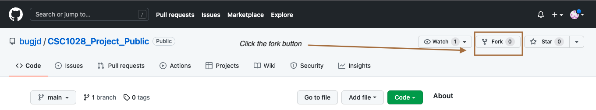

Technical Subguide
Preparing your environment
Now that you have an idea of what we hope to achieve with this human program it is time to establish your own instance of its environment. The environment contains the code required to run the code and edit it. I will explain the technolgies needed to use it below, but before we start we will introduce you to GitHub.
What is Github ?
GitHub is a hosting provider that uses the Git source code management software (GitHub is named after Git) that allows us to:
- Raise Issues on code
- Easily read other peoples code on GitHub
- Fork other peoples repository's and then merge them back together through a pull request,
Github is where the code base for the human programe stored.
Why does this human program keep its codebase on GitHub?
We keeep it GitHub to allow anyone:
- Quickly dowload or fork a copy of the code.
- Allow anyone to contribute to the project, either through creating issues (feature requests, finding bugs, etc) or through asking for their changes to the codebase to be submitted through a pull request.
- It is a free place to store the codebase.
Forking
In this subsection we will talk about forking a repository.
What is Forking
Acording to GitHub: A fork is a copy of a repository that you manage. Forks let you make changes to a project without affecting the original repository. You can fetch updates from or submit changes to the original repository with pull requests.
This means that by forking a repository you get your own copy of the main project where you can do whatever you like. You can even fetch the latest changes from the repository you forked from and use pull requests to ask the people who run the repository you forked from to merge your code with theirs.
Fork the repository
To leave your stamp on this project you can fork the repository. Forking the repository gives you a copy of the repository completely under your control.

To fork the repository navigate to the file while logged in to GitHub and click fork.
Helpful hint: if you don't have a github account I recommend following this guide from wikihow which shows you how to create a free account.)
Once you fork the repository the loading page will be shown for a few moments.
After this your copy of the repository will appear.
From here you can now work on the project. in the next subsection, there are links about good git hub guides.
How to acess the repository and add to it.
Now that you have forked the repository. You first want to get it downloaded to your machine. The best way to do this is through GitHub Clone. This guide from GitHub shows you how to clone a repository down to your local machine.
Later on you will want to commit your code to the repository. Todo this you will use git commit. This Gitlab guide shows you how to make your code viable to gitbhub
Helpful hint: If you become stuck I recommend using GitHub docs which provides great information on how Github and Git in general works. Another great website containing loads of doumentation is the offical Git Website
You can also just download the code by pressing the green code button on your repository and then clicking 'Download Zip' but I discourage it for the following reasons:
- Your not working under a git enviornment, making it difficult to upload your work to GitHub
- You lose the Git feature of undoing things which is great if you want to come back to a clean slate.
Create the enviornment.
Now that we have the code locally on our computer it is time to create the environment. I am now giving you the choice of what to do next depending on what you want.
By picking this method your instance will only be accessible from local host.
By picking this method anyone will be able to use your instance of the human program.
Please return to this guide once you have created your environment.
Lets make a change
Now that you know what this human program does, now lets improve upon the code by making a change. You can make changes when you feel that they're needed or when someone puts up a issue onto the GitHub repository.
As you can see from this issue we are being asked to add push notfictations to our program.
- Navigate to your directory and download the pushbullet library using the command below:
pip install pushbullet.py
-
Go to the pushbullet website

-
Click on 'Sign up with Google' and follow the steps with google
-
Click on set up on my computer
-
Select your broswer from the list
-
Download the Web App to your browswer
-
Go to the settings page on push bullet.
-
press create acess token
-
Open your enviornment in the the
communication.pyfile. As this will be a static method keep it outside of the class. call this methodsend_push_notificationwith a signle arguement.
def send_push_notification(message):
api_key = "***YOUR API KEY***"
push_bullet = Pushbullet(api_key)
push = push_bullet.push_note("Notification from the Human Program", message)
- add send_push_notfication to your sceduled task file.
- run your code. When your task next runs you will get a notfication
The 'Lets make a change' sub task was based upon the tutoiral by pythonandvba showing us how to add push notfications to your phone using python.
Lets share.
Now that you have added your new feature it is time to upload it to github. remember to remove any usernames,passwords and any API keys before sending your changes to a public GitHub repository.
To share the code you just made just follow the steps below:
- make your changes visiable to github using
git add . - make a git commit using
git commit -m "added push notfications"this will add a commit with the comment "adding push notfications" - use
git pushto push your changes to your github
Its time to Return
Follow this link to return to the main blog post.